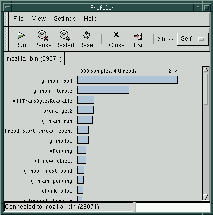

eazel profilers
Contact: Chris McAfee (mcafee@netscape.com)$Id: eazel.html,v 1.7 2001/02/22 06:05:12 mcafee%netscape.com Exp $
- What is this?
- Get and build the profilers
- How to use prof, the statistical profiler
- How to use profiler, the instrumenting profiler
- Interpreting results
- Bugs
- Getting help with this tool
What is this?
Eazel has gotten the old Corel profiler (Linux/Intel) going again, and is actually comprised of two tools:- prof: A statistical profiler that works like jprof but does not require any source changes to mozilla (but still needs symbols in libraries). Has a cool UI that updates as the app is running. There is also an api to start/stop/reset/report profiling.
- profiler: An instrumenting profiler. Requires you to rebuild mozilla with
--enable-eazel-profiler, and has API to start/stop/reset/report profiling. Very resource intensive, reportedly works with gtkEmbed and maybe mozilla.
Get and build the profilers
Both profiler tools are stored on the gnome cvs server, check both out with this:setenv CVSROOT :pserver:anonymous@anoncvs.gnome.org:/cvs/gnome cvs login # blank password cvs checkout -z3 eazel-toolsBuild both profilers:
cd eazel-tools ./autogen.sh gmake
How to use prof, the statistical profiler
Some install hacks were needed with the CVS version, rpm version probably fixes this:
cd mozilla/dist/bin
ln -s <path-to>/eazel-tools/prof/prof/prof.glade .
setenv LD_LIBRARY_PATH ${LD_LIBRARY_PATH}:<path-to>/eazel-tools/prof/.libs
Run the profiler:
cd mozilla/dist/bin <path-to>/eazel-tools/prof/prof mozilla-binHere's a screen shot while mozilla was idling:

{kind=link}
How to use profiler, the instrumenting profiler
Build mozilla with eazel stuff turned on for the modules you are interested here (ex: rdf)./configure --enable-eazel-profiler --with-profile-modules=rdfSome compiler problems here? see shaver's post.
[Insert API start/stop stuff here, haven't looked at this yet --mcafee]
Interpreting results
[hints go here]Bugs
- Possible internal compiler errors using rawhide's gcc, -finstrument-functions does not play well with reg-stack (redhat:25091)
Getting help with these tools
The Eazel guys, some of whom have written code for or use this profiler, hang out onirc://irc.eazel.com/#nautilus, that's probably the best way to find who to direct specific questions to.
Chris McAfee Last modified: Wed Feb 21 22:05:34 PST 2001